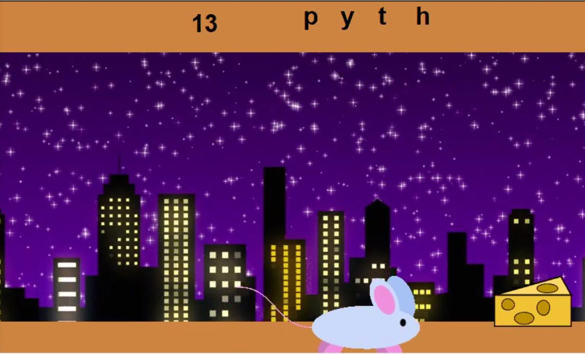
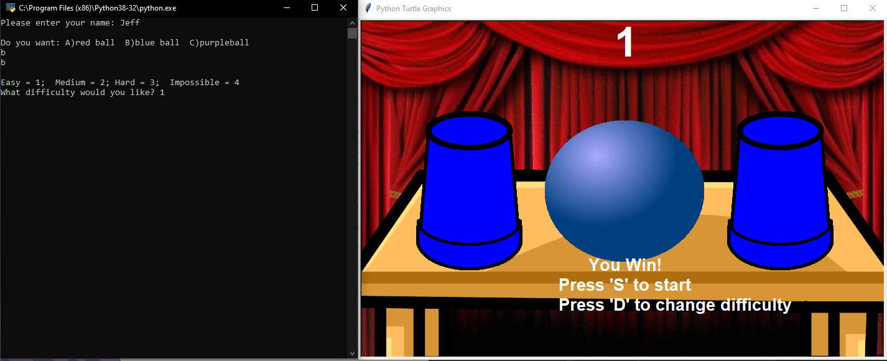
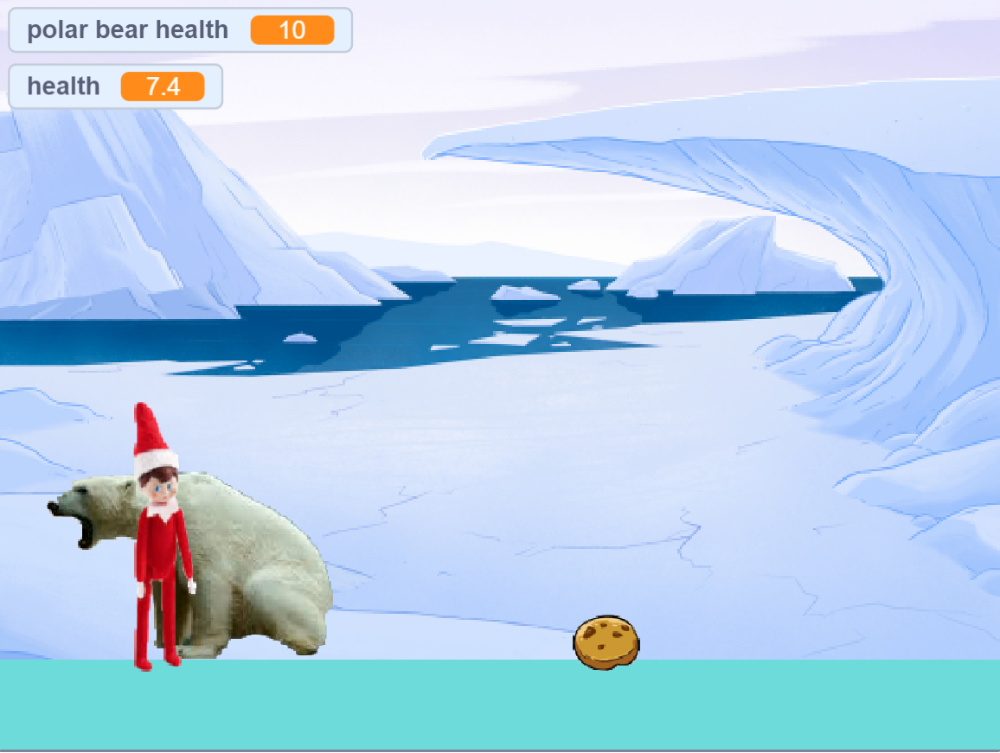

This is my Portfolio Page!

Our first project, Draw It Yourself, allows the user to choose the shape, color, size, and location of an object in an underwater environment. The program asks the user specific questions, for example "What shape would you like to draw?, and the user answers using a list of given objects. Then, the user also picks a color, size, and location and the program draws it for them. Finally, the program asks the user to if they would like to coninue drawing shapes.

The second project we created is based off of Hangman. A random word is chosen from a list of words. The user uses the console to try to guess the letters in the word. For each correct letter, a mouse moves closer to a piece of cheese and the correct letter is written in the correct place on the screen. If a guess is incorrect, a point is taken away from the guess counter. Once the mouse gets the cheese or the guess counter hits zero, the game will end.

This third project is a recreation of the cup game. In the cup game, the cups are shuffled and the user has to follow the cups and pick the one with the ball inside. At the start of the game, the user enters their name, chooses a ball color, and a difficulty to play the game at. When a the the correct cup is chosen, a score counter increases and the user has the option to play again and change the difficulty. If the wrong cup is chosen, the game ends and a leaderboard appears.
 https://scratch.mit.edu/projects/461531517/
This project was created using scratch. We created a level by level game where an elf must travel to the North Pole battling enemies to get the gifts from an evil Santa. The game includes movement controls, health counters, sound effects, background and sprite changes, and a lot of code to create each level.